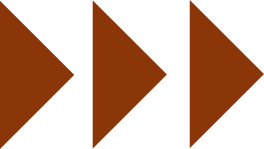

Précédent

Charles Peaucellier est un ancien élève de l’Ecole polytechnique (promotion X 1850). Il fait carrière dans l’armée française.
Cela ne l’empêche pas, bien au contraire, de s’intéresser aux mathématiques.
En 1864, il envoie une lettre sur les prémices de sa découverte à la rédaction des Nouvelles annales de mathématiques, une revue scientifique majeure de l’époque.
Par ce moyen, il s’adresse à toute une communauté, composée de mathématiciens de carrière et d' amateurs de mathématiques. Cette communauté, qui comprend de nombreux polytechniciens, fait fleurir la vie et la culture mathématiques de l’époque.
C’est finalement leur enthousiasme pour les mathématiques qui a permis l’avancée de cette belle science.
Suivant
